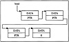
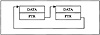
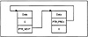

by Alan Parker
CRC Press, CRC Press LLC
ISBN: 0849371716 Pub Date: 08/01/93
|
|
Algorithms and Data Structures in C++
by Alan Parker CRC Press, CRC Press LLC ISBN: 0849371716 Pub Date: 08/01/93 |
| Previous | Table of Contents | Next |
A linked list with four entries is shown in Figure 3.6. As seen in the figure, there is a pointer which points to the head of the list. Each object in the list has associated data and a pointer to the next element in the list. The figure is shown with four objects. The final element contains a NULL pointer. This is common practice to indicate the end of the list. The data in the linked list can be a single element or a large collection of data.
A C++ program to demonstrate the linked list is shown in Code List 3.17. program creates a linked lists of classes. The class template is declared as
template <class T>
class list {
private:
list <T> * next;
friend class start_list<T>;
friend class iterator<T>;
public:
T data;
};
In this declaration next is declared as a pointer to the next element in the list. Two classes are declared as friends to the class, start_list and iterator. As a result these classes will have access to the functions and data of the class list. data is declared as public in the class. The data type T is declared later in the program.
The next class declared in the program is start_list which is defined as
class start_list
{
list<T> *start;
friend clas iterator<T>;
public:
start_list(void) { start=0;}
~start_list(void);
void add(T t);
int isMember(T t);
}
For this class, a pointer to the start of a list is declared. The constructor function start_list() initializes start to zero when an item of class start_list is declared. The function start_list() is declared inline. The function add is used to add elements to the list. The destructor function ~start_list() is called when data of type start_list lose their scope. The function ~start list() is not declared inline. The function isMember is used to determine if a data element matches an element in any of the members of the linked list. Notice that in the program, start_list is used to instantiate a class of type list. The add function is declared next in the program This function creates an element of type list and appends it to the current list. If the list is empty then the function assigns start to the beginning of the new list.
The isMember function is declared next in the program. The isMember function searches the list and tries to find a match to the data t that is passed. If a match is found the function returns I else the function returns 0.
The destructor function for the class, ~start_list, is defined next. The destructor function begins at the start of the list and deletes the lists that are formed making up the entire linked list. The destructor function in turn assigns start to null. This function will be called in the program when any data of type start_list loses scope. This is a very powerful technique of C++. Typically the constructor functions are used to acquire memory upon the creation of a variable and the memory is freed up via the destructor function.
The next class defined is the iterator class. The iterator class is used to traverse the linked list. The iterator class contains a pointer to the start of a list and a cursor to traverse the list. The class contains a function reset which sets the cursor back to the start of the list. The constructor function for the class accepts a parameter which is a pointer to a class of type start_list. The constructor function calls reset to initialize cursor. The function next is used to iterate the list. The function assigns the pointer p to cursor and cursor to cursor->next if cursor is not null.
The program then initiates a number of typedefs which create lists and pointers to list for the data types of string, double, int, char.
The main() routine creates a number of lists. The first list created, number, is declared with list_double number. This list will contain a list of data elements of type double. Upon the declaration of list_double room for the data has not been allocated and the list pointers have been set to null. The first time room for data is allocated is during the call number.add(4.5). This adds 4.5 to the list. Subsequent calls to number.add() append the data to the list. To access the numbers in the newly formed list a list_double_iterator is declared with list_-double_iterator x(& number). The list_double_ptr p access the data via calls to the iterator function x.next(). The output for the program is shown in Code List 3.18.
Code List 3.17 Linked List Source

Figure 3.6 Linked List
Code List 3.18 Output from Code List 3.17
A circular list with two entries is shown in Figure 3.7. A circular list contains a pointer from the last object in the list to the first. In a sense, the new list has no beginning or end. The circular list is common in use for storing the most recent data when limited to finite storage. A common technique is to allocate a fixed amount of storage for a particular database and after it fills up to write over the old data by looping back around to the beginning. Obviously, the application is limited to cases where data loss is not critical. An example might be a database used to store the last 20 issues of The Wall Street Journal.
A doubly linked list with two elements is shown in Figure 3.8. Doubly linked lists are used to provide bidirectional access to the data in the list. For many searching techniques it might be useful to traverse data from both sides of the list. A good example of this is quicksort which is discussed in Section 3.8.

Figure 3.7 Circular List

Figure 3.8 Doubly Linked List
| Previous | Table of Contents | Next |
){kind=link}
){kind=link}
){kind=link}
){kind=link}
){kind=link}
){kind=link}
){kind=link}
){kind=link}
){kind=link}
){kind=link}